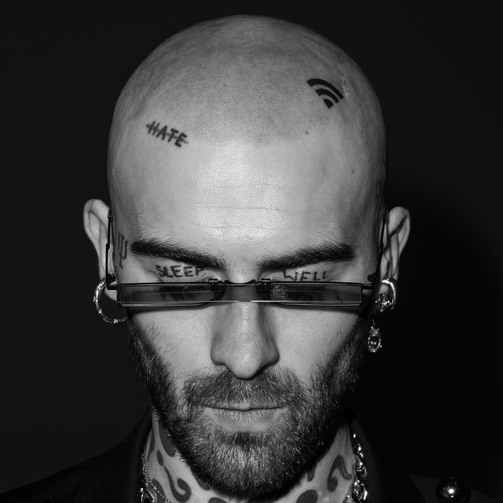
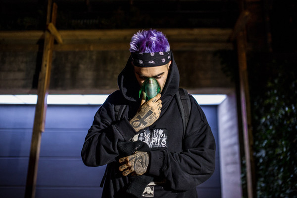
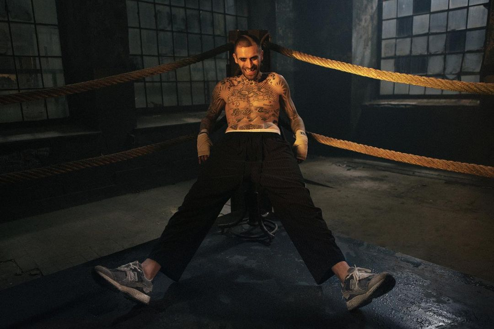
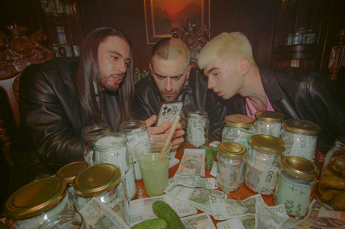
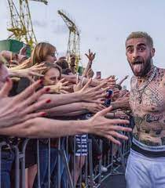
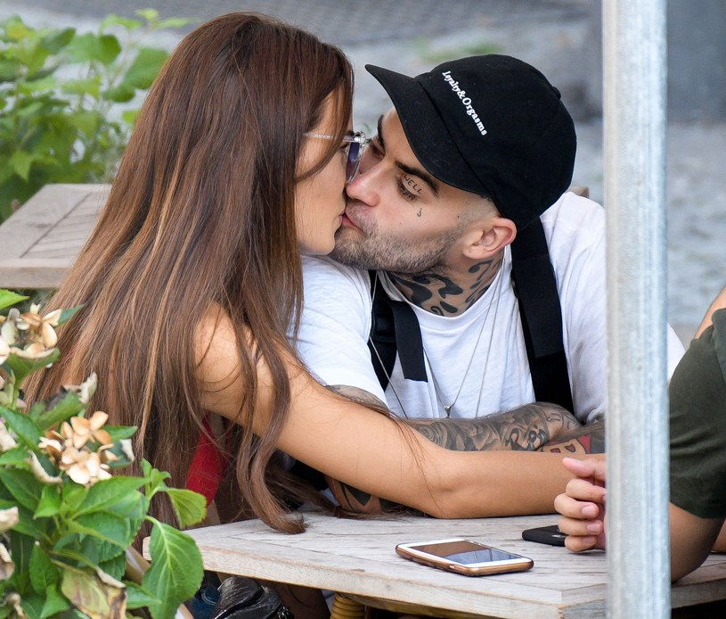

• 12 września 2016 wystąpił w roli komentatora sportowego na kanale Canal+ Sport. W sierpniu 2018 dołączył do klubu piłkarskiego KTS Weszło.
• Wystąpił w reklamie promującej nową kampanię firmy odzieżowej Nike (2017).
• Wiosną 2019 wraz z Kubą Stemplowskim wydał książkę pt. „Egzotyka. Wywiad-rzeka”, opisującą podróż rapera przez 70 krajów, które zwiedził podczas prac nad płytą Egzotyka.
• 1 kwietnia 2020 Quebonafide był gościem Kuby Wojewódzkiego w jego programie „250m² Kuby Wojewódzkiego”. W wywiadzie Kuba opowiadał o jego zniknięciu, życiu w kwarantannie od czasu jego zniknięcia i o płycie „Romantic Psycho”.
• 3 kwietnia 2020 był gościem Tomasza Smokowskiego na „Kanale Sportowym” na YouTube, w którym raper odpowiadał na pytania prowadzącego i widzów, które krążyło wokół jego działalności muzycznej i zamiłowania do sportu.
• Wystąpił w programie „Creeps” Ciechanowskiej Telewizji Kablowej (CTK), w którym zarobił 1 mln zł od serwisu Allegro. Cały dochód z tej akcji oraz dochód ze sprzedaży swoich ubrań na allegro.pl przeznaczył na zakup instrumentów dla dzieci i młodzieży z Orkiestry Dętej OSP w Ciechanowie, wsparcie schroniska dla zwierząt (zakup boksów) w Pawłowie, zakup aparatu do nieinwazyjnego wspomagania oddechu u noworodków na potrzeby Specjalistycznego Szpitala Wojewódzkiego w Ciechanowie oraz na remont i wyposażenie siedziby Towarzystwa Przyjaciół Dzieci w Ciechanowie, a także wspomógł fundację „Dajemy Dzieciom Siłę”
Był w jedenastoletnim związku z Roksaną, z ktorą później się zaręczył. Nagrał dla niej piosenki takie jak m.in. "Love”, "Candy" czy "Bogini”, do którego nakręcił teledysk wspólnie z partnerką w erotycznej scenerii. Obecnie spotyka się z Natalią Szroeder, która zaśpiewała gościnnie w takich piosenkach Quebonafide jak „Jesień” czy „Tęsknięzastarymkanye” z albumu Romantic Psycho.
Najedź na zdjęcie
-
 Quebo
Quebo
-  Quebo i zdjęcie na spotify
- Quebo w Dzień Dobry TVN
- Ciekawa i odważna stylizacja od Quebo
- Quebo i Marcin Prokop
-
 Quebo na teledysku - MATCHA LATTE
Quebo na teledysku - MATCHA LATTE
- Quebo na koncercie
-  Bardzo odważny strój rapera
-  Quebo na teledysku - Benz Dealer
-  Quebo na klipie - Papuga (z matą oraz malikiem montaną)
-  Quebo z fanami
-  Quebo i Natalia Szroeder